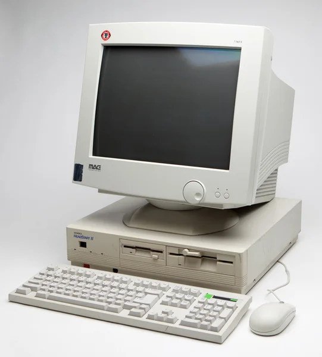

Introdução
A história dos computadores é uma jornada incrível de inovação e progresso. Desde os primeiros dispositivos mecânicos até os poderosos smartphones de hoje, a evolução tecnológica tem sido constante e transformadora.

Inicialmente, máquinas como o Ábaco e a Máquina de Análise de Babbage lançaram as bases para o processamento de dados. A verdadeira revolução começou no século XX, com o advento da eletrônica.
As Gerações dos Computadores
A evolução dos computadores é frequentemente dividida em gerações, cada uma marcada por avanços tecnológicos significativos.
Primeira Geração (1940s-1950s)
Caracterizada pelo uso de válvulas eletrônicas. Computadores como o ENIAC eram enormes, caros e consumiam muita energia. Eles eram usados principalmente para fins militares e científicos.
Segunda Geração (1950s-1960s)
A introdução dos transistores marcou esta geração, tornando os computadores menores, mais rápidos e mais eficientes. Linguagens de programação como FORTRAN e COBOL surgiram.
Terceira Geração (1960s-1970s)
Circuitos integrados (chips) foram a inovação chave, permitindo a miniaturização e o aumento da capacidade de processamento. O mouse e a interface gráfica começaram a ser explorados.
Impacto na Sociedade
A computação transformou radicalmente a sociedade, influenciando a comunicação, a educação, a medicina e quase todos os aspectos da vida moderna. Desde a internet até a inteligência artificial, os computadores continuam a moldar nosso futuro. É difícil imaginar o mundo sem eles hoje. Eles se tornaram ferramentas indispensáveis em todos os setores.
Curiosidades e Marcos Importantes
| Ano | Evento/Tecnologia |
|---|---|
| 1642 | Pascalina (Blaise Pascal) |
| 1943 | Colossus (primeiro computador eletrônico programável) |
| 1971 | Primeiro microprocessador (Intel 4004) |
| 1981 | Lançamento do IBM PC |
| 1990 | Nascimento da World Wide Web (Tim Berners-Lee) |